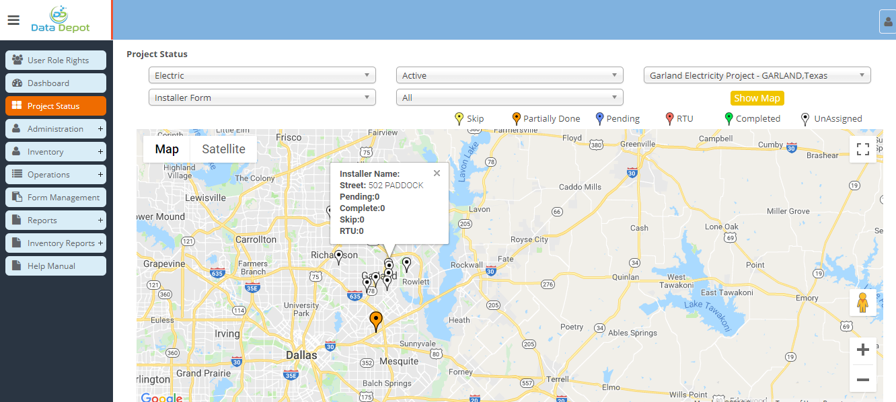
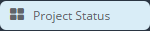

Project Status
- Status of any project can be viewed here.
- It shows addresses as pins on Google map according to project and installer selected.
- Address pins are shown in different color according to its work status.
- Blue pin means all visits are pending at that location.
- Green pin means all visits at that location are completed.
- Red pin means RTU visits i.e. Return to Utility visits.
- Orange pins means Partially Done i.e. 'Some visits are pending and some are completed' or 'some visits are pending and some are skipped/RTU'.
- Yellow pins mean skipped visits of installer
- Grey pin means visits which are not yet allocated to installer

Steps
- Click on the

Menu to open Project Status screen.
- Select the utility from Utility dropdown.
- Select the project status from Project Status dropdown.
- Select the project from Project dropdown.
- Select the form type from Form Type dropdown.
- Select the installer from installer dropdown.
- Select "All" from dropdown to select all installers.
- Click on button.
- Address pins are displayed on the map with different colors depending on their status.
Created with the Personal Edition of HelpNDoc: Produce Kindle eBooks easily